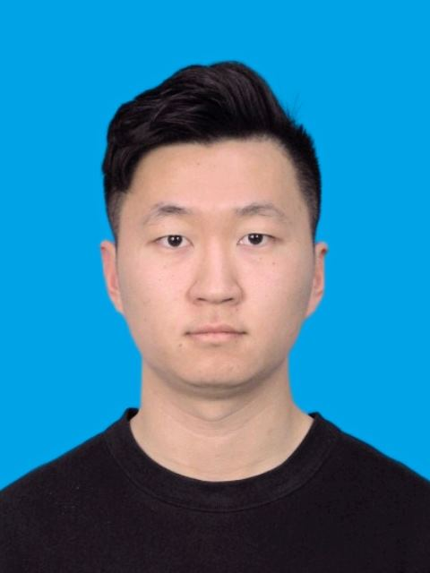

Tianzheng Miao 苗天正
Marie Skłodowska-Curie Ph.D. Student
WaveCore, Department of Electrical Engineering (ESAT)
KU Leuven, Ghent and Aalst Campuses
Currently on an 18-month industrial secondment at IS-Wireless as a Junior Research Engineer in the Research and Innovation Department.
Gebroeders De Smetstraat 1, 9000 Gent, Belgium
Email: tianzheng.miao@kuleuven.be

About
I am currently pursuing a Ph.D. in the Department of Electrical Engineering (ESAT) at KU Leuven under the supervision of Prof. François Rottenberg. Prior to this, I earned a B.Eng. in Telecommunication Engineering from Xidian University, Xi’an, China, in 2022, and an M.Phil. in Computer and Information Engineering from The Chinese University of Hong Kong, Shenzhen, China, in 2024, under the supervision of Prof. Rui Zhang.
As part of the EMPOWER-6G project, my research focuses on designing and implementing physical layer (PHY) mechanisms to enable cell-free (CF) networking using real channel data from the KU Leuven testbed (Techtile). Additionally, I am investigating dynamic algorithms for optimizing cooperation levels between DUs and APs, aiming to minimize interference at the regional edge while maintaining computational complexity at the CPU within practical limits.
I have now joined IS-Wireless as a Junior Research Engineer in the Research and Innovation Department, to carry out the 18-month industrial secondment of the second phase of EMPOWER-6G. Working closely with industry, I study AI-RAN and O-RAN, focusing on how distributed units (DUs) and radio units (RUs) can cooperate under practical constraints: limited fronthaul capacity and inter-user interference. This builds on the physical-layer signal-processing research of the first phase of my Ph.D. and extends its scope from Layer 1 to Layers 1 and 2, covering the low-PHY, high-PHY, MAC and RLC, and potentially also PDCP and RRC.
Research Interests
I have a wide range of interests in design and performance optimization for wireless communication systems. My current research focuses on:
- Cell-free massive multiple-input multiple-output (CF-mMIMO)
- AI-RAN and Open RAN (O-RAN)
- Deep learning
- Wireless sensing
Research
AI-RAN and O-RAN: DU–RU Cooperation under Practical Constraints
Cooperation between distributed units (DUs) and radio units (RUs) under limited fronthaul capacity and inter-user interference, extending physical-layer signal processing from Layer 1 to Layers 1 and 2. Carried out during an industrial secondment at IS-Wireless.
AI-Driven Low-Physical-Layer Signal Processing in Distributed MIMO
Learning-based precoder design for cell-free massive MIMO: graph neural networks trained on synthetic channels and fine-tuned with real channel measurements from the Techtile testbed.
Efficient Fronthaul Compression in Distributed Wireless Network Architectures
Reducing the radio data exchanged between access points and processing units while preserving the information a distributed network needs.
Selected Publications
Testbed Evaluation of AI-Based Precoding in Distributed MIMO Systems
2026 IEEE Wireless Communications and Networking Conference (WCNC), pp. 1–6, 2026. doi: 10.1109/WCNC65185.2026.11555282.
PaperarXivProject pageBibTeX
Download .bib@inproceedings{miaowcnc2026, title = {Testbed Evaluation of AI-Based Precoding in Distributed MIMO Systems}, author = {Tianzheng Miao and Thomas Feys and Gilles Callebaut and Jarne Van Mulders and Md Arifur Rahman and François Rottenberg}, booktitle = {2026 IEEE Wireless Communications and Networking Conference (WCNC)}, year = {2026}, pages = {1--6}, doi = {10.1109/WCNC65185.2026.11555282}, url = {https://ieeexplore.ieee.org/document/11555282} }GNN-based Precoder Design and Fine-tuning for Cell-free Massive MIMO with Real-world CSI
45th Symposium on Information Theory and Signal Processing (SITB), 2025.
PaperarXivProject pageBibTeX
Download .bib@inproceedings{miaositb2025, title = {GNN-based Precoder Design and Fine-tuning for Cell-free Massive MIMO with Real-world CSI}, author = {Tianzheng Miao and Thomas Feys and Gilles Callebaut and Jarne Van Mulders and Emanuele Peschiera and Md Arifur Rahman and François Rottenberg}, booktitle = {45th Symposium on Information Theory and Signal Processing (SITB)}, year = {2025}, doi = {10.48550/arXiv.2505.08788}, url = {https://doi.org/10.48550/arXiv.2505.08788} }
Experience
- 2026 –
- Junior Research Engineer (industrial secondment)
Research and Innovation Department, IS-Wireless
18-month secondment in the second phase of EMPOWER-6G. AI-RAN and O-RAN research in close collaboration with industry.
Education
- Present
- Ph.D. in Electrical Engineering
KU Leuven
ESAT · WaveCore. Physical-layer mechanisms for cell-free networking.
Supervisor: François Rottenberg - 2024
- M.Phil. in Computer & Information Engineering
The Chinese University of Hong Kong, Shenzhen
Supervisor: Rui Zhang - 2022
- B.Eng. in Telecommunication Engineering
Xidian University
Xi’an, China.
Awards
- 2020
- Bronze Award
China College Students “Internet+” Innovation and Entrepreneurship Competition - 2020
- H Prize
Mathematical Contest in Modeling (MCM) - 2019
- 1st Prize
Micro Course Competition
Contact
If you are interested in our work, or just want to have a casual chat, please feel free to email me. I am very willing to learn and exchange ideas with different people.